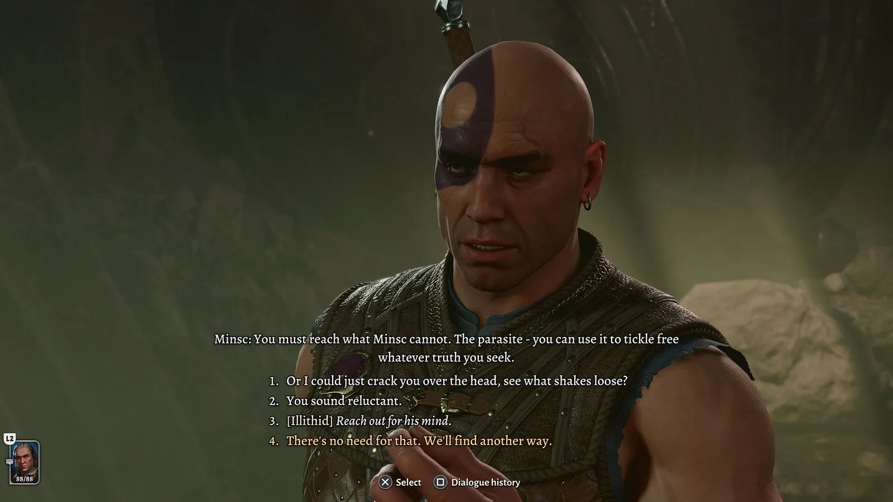
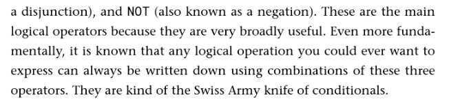
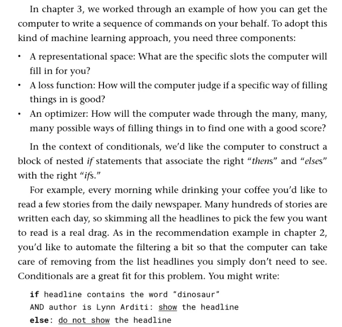
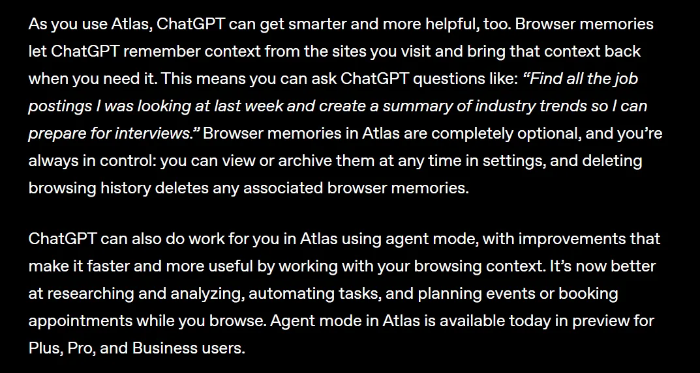
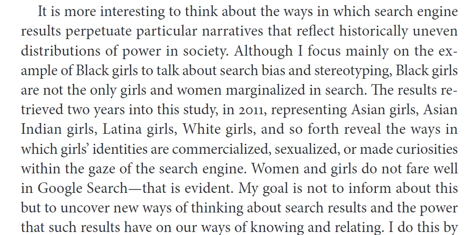
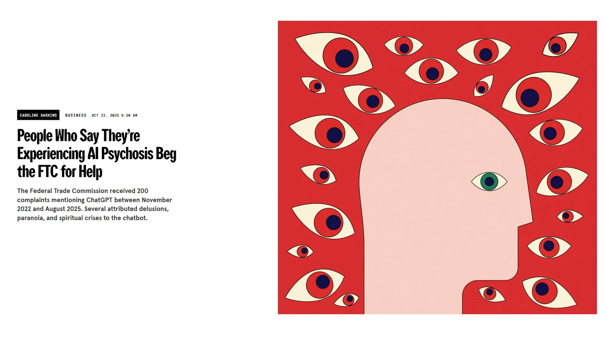

Web and Interactive Applications
Tuesday, June 24, 2026 · 10 AM – noon · CHDR
Part 1
Walk through, together: what a repository is, what a commit is in plain language, what main means, and what GitHub Pages does.

https://<username>.github.io/<repo>/
Part 2
What persists, what changes. Why a real GitHub repository matters even for a one-page site.
Live demo
Same tool, same prompt structure, deployed to a real GitHub Pages URL inside the demo block. Watch the iteration: palette, sections, typo. This is the workflow you'll do in 50 minutes.

Exercise
Adapted from DistantCodingUMKC and HumanitiesAI/weekeleven:
my-eportfolio) → set Public → check Add a README./site. Make it deploy-ready for Pages."main, folder /site (or /(root)) → wait two minutes → save your URL.
I just made a website without writing any code. The honest answer is: yes — and also you wrote prose, you made design decisions, you reviewed the output, you committed changes. That is a literacy, even if it isn't the literacy you grew up calling 'programming.'
— From the Workshop 4 pedagogical note

Part 5
Bring the assignment you're worried about. Or the one you've been wanting to redesign. Open Q&A on how Code Web fits in your fall.

That URL stays live as long as the repo exists. You own the work, the version history, and the attribution.